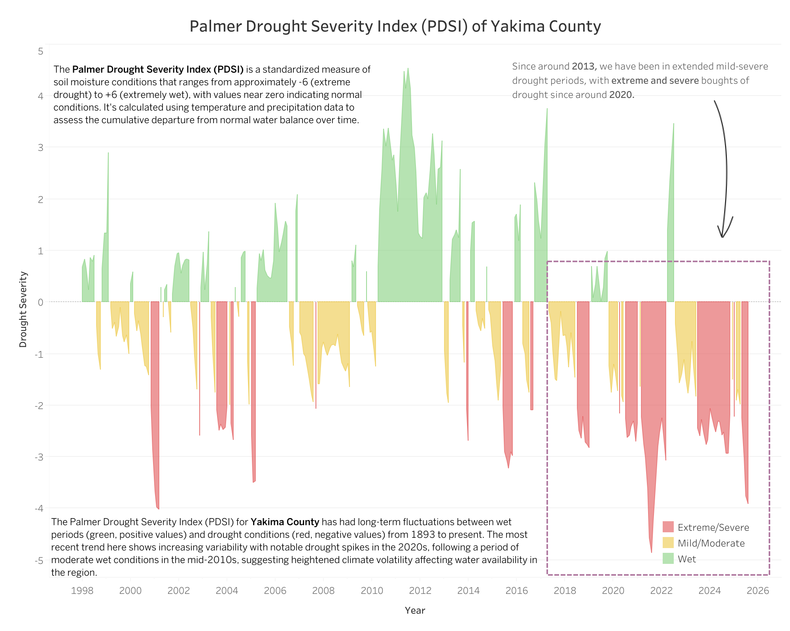

A Warning from the Yakima: Washington's Water Future in a Warming Climate
Visualizing severe drought across Washington's agricultural heartland
View Dashboard →

The Situation
The Yakima Basin in central Washington is experiencing its worst water shortage in decades. But how do you make people understand just how dire it is? Numbers in a spreadsheet don't capture the urgency.
What I Created
Three complementary visualizations that tell the complete story:
1 · The Reservoir Map
A geographic snapshot showing all five major reservoirs at critically low levels. The largest, Kachess Reservoir, sits at just 16% capacity. The others? Between 4–19%. The visual is stark: these reservoirs, represented by glass icons on the map, are nearly empty.
2 · 130 Years of Storage Data
A time-series chart of Cle Elum Reservoir showing seasonal patterns from the 1890s to today. The recent years stand out dramatically — water levels that once reliably climbed above historical averages now barely reach half capacity. Three major droughts in the 2010s and 2020s are clearly marked, with the current situation being the worst yet.
3 · The Palmer Drought Severity Index
A color-coded timeline showing wet periods (green) versus drought periods (red/pink) since 1998. The pattern shift is unmistakable: after 2013, the region entered extended drought with increasingly severe episodes. The 2020s show extreme drought conditions dominating the landscape.
Why It Matters
The Yakima Basin supplies water to one of the nation's most productive agricultural regions. These visualizations provide water managers, farmers, policymakers, and journalists with clear evidence that this isn't a temporary dry spell — it's a fundamental shift in water availability that demands immediate action.
The Message
The reservoirs aren't just low this year. They're consistently failing to refill to historical levels, decade after decade. That's not weather variability — that's climate change.
Detailed Project Overview
Create a comprehensive water resource monitoring system for the Yakima River Basin that visualizes current reservoir conditions, historical storage patterns, and drought severity to inform stakeholders about the region's water crisis.
Analyze water storage data across five Yakima Basin reservoirs (2012–2025) and Palmer Drought Severity Index data from 1893 to present, creating an integrated visualization system combining geographic context, temporal analysis, and drought metrics.
Key Visualization Aspects
- Geographic Context Map: Interactive Mapbox visualization showing reservoir locations along the Yakima River system with real-time capacity percentages displayed through intuitive container icons
- Time-Series Reservoir Analysis: Area chart tracking Cle Elum Reservoir storage from 2012–2025, highlighting critical drought years (2015, 2019, 2021) and comparing current levels against 50-year historical averages
- Drought Severity Tracking: Palmer Drought Severity Index visualization spanning 130+ years (1893–present), revealing increasing climate volatility and recent extreme drought conditions in Yakima County
Methodology
Enables farmers and irrigation districts to make informed decisions about crop planning and water allocation
Provides evidence for water resource management policies and drought response planning
Custom geographic visualization with styled basemaps, river systems, and interactive reservoir indicators
Integration of PDSI data spanning over a century, with color-coded severity classifications and seasonal smoothing
Challenges & Solutions
Visualizing Cyclical Reservoir Patterns
Reservoir storage follows distinct seasonal cycles — filling during spring snowmelt and depleting through summer irrigation season. The challenge was displaying these natural fluctuations while highlighting abnormal drought conditions.
Solution: Implemented reference lines showing both "Overall Average (1961–2010)" and "Annual Low Point Average (1961–2010)" to provide context for normal seasonal variation versus drought-induced depletion. This allows viewers to distinguish between expected seasonal lows and crisis-level storage.
Communicating Current Crisis Severity
With five reservoirs at different capacity levels, conveying the system-wide water shortage required a clear, immediate visual language.
Solution: Designed custom container icons sized proportionally to capacity, with bright cyan coloring for immediate visual recognition against the dark basemap. Positioning reservoirs geographically while displaying percentage values creates both spatial and quantitative understanding.
Connecting Short-Term Trends to Long-Term Climate Patterns
Reservoir data alone might suggest temporary drought conditions, but understanding the broader climate context requires historical perspective.
Solution: Integrated the Palmer Drought Severity Index spanning the last 30 years, revealing that recent extreme drought events (2020s) fit within a pattern of increasing climate volatility and prolonged dry periods since 2013 — demonstrating this is not merely a short-term weather fluctuation but part of long-term climate change impacts.
The Approach & Process
Data Sources & Metrics
Reservoir Storage Data
- Source: U.S. Bureau of Reclamation (USBR)
- Coverage: Five major Yakima Basin reservoirs (Keechelus, Kachess, Cle Elum, Bumping Lake, Rimrock)
- Temporal Range: 2012–2025 for detailed analysis (Cle Elum Visual)
- Baseline Period: 1961–2010 for historical comparison
- Measurement: Acre-feet storage capacity
Palmer Drought Severity Index (PDSI)
- Standardized drought metric ranging from −6 (extreme drought) to +6 (extremely wet)
- Incorporates temperature, precipitation, and soil moisture data
- Historical coverage: 1893–present for Yakima County, highlighting the last 30 years
- Provides long-term climate context beyond reservoir measurements
Visualization Design
Geographic Visualization (Mapbox)
- Dark theme to emphasize water features and data elements
- Custom styled river systems (Yakima, Naches, Tieton) in cyan
- Custom SVG container shapes representing fill levels with real-time capacity percentages (4%, 10%, 16%, 19%)
- Strategic label placement for readability with geographic reference cities
Time-Series Analysis (Tableau)
- Area chart design emphasizing seasonal storage patterns
- Dual reference lines for overall average and annual low points
- Annotated drought years (2015, 2019, 2021) with contextual callouts
- Gradient color scheme showing depth of storage depletion
Climate Context (PDSI Visualization)
- Three-color classification system: green (wet), yellow (moderate), red (extreme/severe drought)
- Zero-line reference for normal conditions
- Extended time series revealing century-long patterns
- Recent trend highlighting (2013–present) showing persistent drought conditions
- Seasonal smoothing with color thresholds aligned to standard PDSI classifications
This multi-layered approach combines current snapshot data (reservoir map), medium-term trends (2012–2025 storage), and long-term climate patterns (30 years of PDSI) to create a comprehensive picture of the Yakima Basin's water crisis.
Data Sources
U.S. Bureau of Reclamation
Source: USBR Pacific Northwest Hydromet
Dataset: Yakima Basin Reservoir Storage Records
Coverage: Five major reservoirs, 2012–2025
USDA Natural Resources Conservation Service
Source: NRCS Snow & Climate Monitoring
Dataset: Palmer Drought Severity Index, Yakima County
Coverage: 1893–present